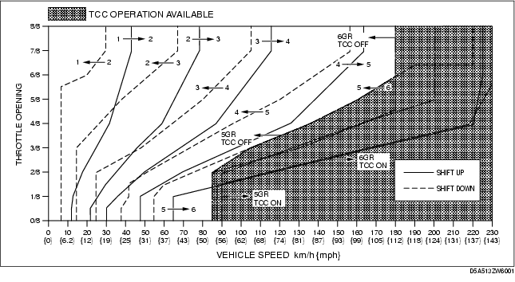

Workshop Manual ➭ TRANSMISSION/TRANSAXLE ➭ AUTOMATIC TRANSMISSION[SJ6A-EL] ➭ ROAD TEST [SJ6A-EL]
ROAD TEST [SJ6A-EL]
id051311248900
{: #wp1058564}
Warning
• When performing a road test, be aware of other vehicles, people, impediments to avoid an accident.
*Note*{: #wp1058582}
• When the legal speed limit must be exceeded, use a chassis dynamometer instead of performing a road test.
Road Test Preparation
-
Inspect the engine coolant level. (See ENGINE COOLANT LEVEL INSPECTION [L8, LF].)
-
Inspect the engine oil level. (See ENGINE OIL LEVEL INSPECTION [L8, LF].)
-
Inspect the ATF level. (See AUTOMATIC TRANSMISSION FLUID (ATF) LEVEL ADJUSTMENT [SJ6A-EL].)
-
Inspect the idle speed. (See Idle Speed Inspection.)
-
Inspect the ignition timing. (See Ignition Timing Inspection.)
-
Wait until the engine and transmission reach normal operating temperature.
Shift Diagram
D range (normal mode)

D Range Test
-
Perform road test preparation. (See Road Test Preparation.)
-
Shift the selector lever to the D range.
-
Accelerate with the throttle half and then wide open.
-
Verify that 1→2, 2→3, 3→4, 4→5, and 5→6 upshifts can be obtained. The shift points must be as shown in the table below.
• If there is any malfunction, inspect the TCM and AT. (See SYMPTOM TROUBLESHOOTING ITEM TABLE [SJ6A-EL].)
- Drive the vehicle in 6GR, 5GR, 4GR, 3GR, 2GR and verify that kickdown occurs for 6→5, 5→4, 4→3, 3→2, and 2→1 downshifts, and that the shift points are as shown in the table below.
• If there is any malfunction, inspect the TCM and AT. (See SYMPTOM TROUBLESHOOTING ITEM TABLE [SJ6A-EL].)
- Decelerate the vehicle and verify that engine braking effect is felt in 4GR, 5GR, and 6GR.
• If there is any malfunction, inspect the TCM and AT. (See SYMPTOM TROUBLESHOOTING ITEM TABLE [SJ6A-EL].)
- Drive the vehicle and verify that TCC operation is obtained. The operation points must be as shown in the table below.
• If there is any malfunction, inspect the TCM and AT. (See SYMPTOM TROUBLESHOOTING ITEM TABLE [SJ6A-EL].)
**Shift point table
+--------------------------+-------------------------+-----------------------------------------+----------------------------+-------------------------------------------------------------------+------------------------------------------------------------+ | Range {: #wp1059085} | Mode {: #wp1059087} | Throttle condition {: #wp1059089} | Shift {: #wp1059091} | Vehicle speed {: #wp1059093} (km/h {mph}) {: #wp1059267} | Turbine speed {: #wp1059095} (rpm) {: #wp1059284} | +==========================+=========================+=========================================+============================+===================================================================+============================================================+ | D {: #wp1058931} | NORMAL {: #wp1058933} | Wide open throttle {: #wp1058989} | D1→D2 {: #wp1060023} | 40-46 {25-28} {: #wp1058995} | 5,150-5,900 {: #wp1058998} | +--------------------------+-------------------------+-----------------------------------------+----------------------------+-------------------------------------------------------------------+------------------------------------------------------------+ | | | | D2→D3 {: #wp1060063} | 76-84 {48-52} {: #wp1059138} | 5,700-6,250 {: #wp1059141} | +--------------------------+-------------------------+-----------------------------------------+----------------------------+-------------------------------------------------------------------+------------------------------------------------------------+ | | | | D3→D4 {: #wp1060103} | 112-122 {70-75} {: #wp1059157} | 5,750-6,200 {: #wp1059160} | +--------------------------+-------------------------+-----------------------------------------+----------------------------+-------------------------------------------------------------------+------------------------------------------------------------+ | | | | D4→D5 {: #wp1060143} | 158-168 {98-104} {: #wp1059176} | 5,750-6,100 {: #wp1059179} | +--------------------------+-------------------------+-----------------------------------------+----------------------------+-------------------------------------------------------------------+------------------------------------------------------------+ | | | | TCC ON (D5) {: #wp1059192} | 195-205 {121-127} {: #wp1059195} | 5,100-5,300 {: #wp1059198} | +--------------------------+-------------------------+-----------------------------------------+----------------------------+-------------------------------------------------------------------+------------------------------------------------------------+ | | | | D5→D6 {: #wp1060216} | 220-230 {137-142} {: #wp1059214} | 4,700-4,850 {: #wp1059217} | +--------------------------+-------------------------+-----------------------------------------+----------------------------+-------------------------------------------------------------------+------------------------------------------------------------+ | | | | TCC ON (D6) {: #wp1059230} | 227-237 {141-146} {: #wp1059233} | 4,850-5,000 {: #wp1059236} | +--------------------------+-------------------------+-----------------------------------------+----------------------------+-------------------------------------------------------------------+------------------------------------------------------------+ | | | Half throttle {: #wp1059978} | D1→D2 {: #wp1060308} | 26-34 {17-21} {: #wp1059984} | 3,350-4,400 {: #wp1059987} | +--------------------------+-------------------------+-----------------------------------------+----------------------------+-------------------------------------------------------------------+------------------------------------------------------------+ | | | | D2→D3 {: #wp1060348} | 48-63 {30-39} {: #wp1059965} | 3,550-4,750 {: #wp1059968} | +--------------------------+-------------------------+-----------------------------------------+----------------------------+-------------------------------------------------------------------+------------------------------------------------------------+ | | | | D3→D4 {: #wp1060388} | 71-94 {45-58} {: #wp1059946} | 3,600-4,800 {: #wp1059949} | +--------------------------+-------------------------+-----------------------------------------+----------------------------+-------------------------------------------------------------------+------------------------------------------------------------+ | | | | D4→D5 {: #wp1060428} | 118-129 {74-79} {: #wp1059927} | 4,300-4,650 {: #wp1059930} | +--------------------------+-------------------------+-----------------------------------------+----------------------------+-------------------------------------------------------------------+------------------------------------------------------------+ | | | | TCC ON (D5) {: #wp1059905} | 149-176 {93-109} {: #wp1059908} | 3,850-4,550 {: #wp1059911} | +--------------------------+-------------------------+-----------------------------------------+----------------------------+-------------------------------------------------------------------+------------------------------------------------------------+ | | | | D5→D6 {: #wp1060501} | 206-222 {128-137} {: #wp1059889} | 5,350-5,750 {: #wp1059892} | +--------------------------+-------------------------+-----------------------------------------+----------------------------+-------------------------------------------------------------------+------------------------------------------------------------+ | | | | TCC ON (D6) {: #wp1059867} | 204-220 {127-136} {: #wp1059870} | 4,350-4,650 {: #wp1059873} | +--------------------------+-------------------------+-----------------------------------------+----------------------------+-------------------------------------------------------------------+------------------------------------------------------------+ | | | Closed throttle position {: #wp1059845} | D6→D5 {: #wp1060607} | 52-58 {33-35} {: #wp1059851} | 1,150-1,200 {: #wp1059854} | +--------------------------+-------------------------+-----------------------------------------+----------------------------+-------------------------------------------------------------------+------------------------------------------------------------+ | | | | D5→D4 {: #wp1060647} | 35-41 {22-25} {: #wp1059832} | 950-1,050 {: #wp1059835} | +--------------------------+-------------------------+-----------------------------------------+----------------------------+-------------------------------------------------------------------+------------------------------------------------------------+ | | | | D4→D3 {: #wp1060687} | 22-28 {14-17} {: #wp1059813} | 850-1,000 {: #wp1059816} | +--------------------------+-------------------------+-----------------------------------------+----------------------------+-------------------------------------------------------------------+------------------------------------------------------------+ | | | | D3→D2 {: #wp1060727} | 12-18 {8-11} {: #wp1059794} | 650-900 {: #wp1059797} | +--------------------------+-------------------------+-----------------------------------------+----------------------------+-------------------------------------------------------------------+------------------------------------------------------------+ | | | | D2→D1 {: #wp1060767} | 4-10 {3-6} {: #wp1059775} | 300-700 {: #wp1059778} | +--------------------------+-------------------------+-----------------------------------------+----------------------------+-------------------------------------------------------------------+------------------------------------------------------------+ | | | Kickdown {: #wp1059750} | D6→D5 {: #wp1060850} | 215-225 {134-139} {: #wp1059756} | 4,600-4,750 {: #wp1059759} | +--------------------------+-------------------------+-----------------------------------------+----------------------------+-------------------------------------------------------------------+------------------------------------------------------------+ | | | | D5→D4 {: #wp1060890} | 152-162 {95-100} {: #wp1059737} | 3,950-4,200 {: #wp1059740} | +--------------------------+-------------------------+-----------------------------------------+----------------------------+-------------------------------------------------------------------+------------------------------------------------------------+ | | | | D4→D3 {: #wp1060930} | 100-110 {62-68} {: #wp1059718} | 3,650-4,000 {: #wp1059721} | +--------------------------+-------------------------+-----------------------------------------+----------------------------+-------------------------------------------------------------------+------------------------------------------------------------+ | | | | D3→D2 {: #wp1060970} | 63-71 {40-44} {: #wp1059699} | 3,250-3,600 {: #wp1059702} | +--------------------------+-------------------------+-----------------------------------------+----------------------------+-------------------------------------------------------------------+------------------------------------------------------------+ | | | | D2→D1 {: #wp1061010} | 27-33 {17-20} {: #wp1059680} | 2,050-2,450 {: #wp1059683} | +--------------------------+-------------------------+-----------------------------------------+----------------------------+-------------------------------------------------------------------+------------------------------------------------------------+ | | POWER {: #wp1059652} | Wide open throttle {: #wp1059655} | D1→D2 {: #wp1061156} | 40-46 {25-28} {: #wp1059661} | 5,150-5,900 {: #wp1059664} | +--------------------------+-------------------------+-----------------------------------------+----------------------------+-------------------------------------------------------------------+------------------------------------------------------------+ | | | | D2→D3 {: #wp1061196} | 76-84 {48-52} {: #wp1059642} | 5,700-6,250 {: #wp1059645} | +--------------------------+-------------------------+-----------------------------------------+----------------------------+-------------------------------------------------------------------+------------------------------------------------------------+ | | | | D3→D4 {: #wp1061236} | 112-122 {70-75} {: #wp1059623} | 5,750-6,200 {: #wp1059626} | +--------------------------+-------------------------+-----------------------------------------+----------------------------+-------------------------------------------------------------------+------------------------------------------------------------+ | | | | D4→D5 {: #wp1061276} | 158-168 {103-108} {: #wp1059604} | 5,750-6,100 {: #wp1059607} | +--------------------------+-------------------------+-----------------------------------------+----------------------------+-------------------------------------------------------------------+------------------------------------------------------------+ | | | | D5→D6 {: #wp1061316} | 220-230 {137-142} {: #wp1059585} | 5,750-5,950 {: #wp1059588} | +--------------------------+-------------------------+-----------------------------------------+----------------------------+-------------------------------------------------------------------+------------------------------------------------------------+ | | | Half throttle {: #wp1059560} | D1→D2 {: #wp1061419} | 30-37{19-22} {: #wp1059566} | 3,850-4,800 {: #wp1059569} | +--------------------------+-------------------------+-----------------------------------------+----------------------------+-------------------------------------------------------------------+------------------------------------------------------------+ | | | | D2→D3 {: #wp1061459} | 50-65 {31-40} {: #wp1059547} | 3,750-4,850 {: #wp1059550} | +--------------------------+-------------------------+-----------------------------------------+----------------------------+-------------------------------------------------------------------+------------------------------------------------------------+ | | | | D3→D4 {: #wp1061499} | 76-99 {48-61} {: #wp1059528} | 3,900-5,050 {: #wp1059531} | +--------------------------+-------------------------+-----------------------------------------+----------------------------+-------------------------------------------------------------------+------------------------------------------------------------+ | | | | D4→D5 {: #wp1061539} | 126-138 {79-85} {: #wp1059509} | 4,600-5,000 {: #wp1059512} | +--------------------------+-------------------------+-----------------------------------------+----------------------------+-------------------------------------------------------------------+------------------------------------------------------------+ | | | | D5→D6 {: #wp1061579} | 206-222 {128-137} {: #wp1059490} | 5,350-5,750 {: #wp1059493} | +--------------------------+-------------------------+-----------------------------------------+----------------------------+-------------------------------------------------------------------+------------------------------------------------------------+ | | | Closed throttle position {: #wp1059465} | D6→D5 {: #wp1061692} | 82-88 {51-54} {: #wp1059471} | 1,750-1,850 {: #wp1059474} | +--------------------------+-------------------------+-----------------------------------------+----------------------------+-------------------------------------------------------------------+------------------------------------------------------------+ | | | | D5→D4 {: #wp1061732} | 57-63 {36-39} {: #wp1059452} | 1,500-1,600 {: #wp1059455} | +--------------------------+-------------------------+-----------------------------------------+----------------------------+-------------------------------------------------------------------+------------------------------------------------------------+ | | | | D4→D3 {: #wp1061772} | 27-33 {17-20} {: #wp1059433} | 1,000-1,200 {: #wp1059436} | +--------------------------+-------------------------+-----------------------------------------+----------------------------+-------------------------------------------------------------------+------------------------------------------------------------+ | | | | D3→D2 {: #wp1061812} | 12-18 {8-11} {: #wp1059414} | 650-900 {: #wp1059417} | +--------------------------+-------------------------+-----------------------------------------+----------------------------+-------------------------------------------------------------------+------------------------------------------------------------+ | | | | D2→D1 {: #wp1061852} | 4-10 {3-6} {: #wp1059395} | 300-700 {: #wp1059398} | +--------------------------+-------------------------+-----------------------------------------+----------------------------+-------------------------------------------------------------------+------------------------------------------------------------+ | | | Kickdown {: #wp1059370} | D6→D5 {: #wp1061975} | 215-225 {134-139} {: #wp1059376} | 4,600-4,750 {: #wp1059379} | +--------------------------+-------------------------+-----------------------------------------+----------------------------+-------------------------------------------------------------------+------------------------------------------------------------+ | | | | D5→D4 {: #wp1062015} | 152-162 {95-100} {: #wp1059357} | 3,950-4,200 {: #wp1059360} | +--------------------------+-------------------------+-----------------------------------------+----------------------------+-------------------------------------------------------------------+------------------------------------------------------------+ | | | | D4→D3 {: #wp1062055} | 100-110 {62-68} {: #wp1059338} | 3,650-4,000 {: #wp1059341} | +--------------------------+-------------------------+-----------------------------------------+----------------------------+-------------------------------------------------------------------+------------------------------------------------------------+ | | | | D3→D2 {: #wp1062095} | 63-71 {40-44} {: #wp1059319} | 3,250-3,600 {: #wp1059322} | +--------------------------+-------------------------+-----------------------------------------+----------------------------+-------------------------------------------------------------------+------------------------------------------------------------+ | | | | D2→D1 {: #wp1062135} | 27-33 {17-20} {: #wp1059300} | 2,050-2,450 {: #wp1059303} | +--------------------------+-------------------------+-----------------------------------------+----------------------------+-------------------------------------------------------------------+------------------------------------------------------------+**{: #wp1058923}
M Range Test
-
Perform road test preparation. (See Road Test Preparation.)
-
Shift the selector lever to M range.
-
Verify that 1→2, 2→3, 3→4, 4→5, and 5→6 upshifts and 6→5, 5→4, 4→3, 3→2, and 2→1 downshifts are obtained by manual shifting.
• If there is any malfunction, inspect the TCM and AT. (See SYMPTOM TROUBLESHOOTING ITEM TABLE [SJ6A-EL].)
- Decelerate the vehicle and verify that 6→5, 5→4, 4→3, 3→2, and 2→1 downshifts are obtained. The shift points must be as shown in the table below.
• If there is any malfunction, inspect the TCM and AT. (See SYMPTOM TROUBLESHOOTING ITEM TABLE [SJ6A-EL].)
- Decelerate the vehicle and verify that engine braking effect is felt in all gears.
• If there is any malfunction, inspect the TCM and AT. (See SYMPTOM TROUBLESHOOTING ITEM TABLE [SJ6A-EL].)
- Drive the vehicle and verify that TCC operation is obtained in 5GR and 6GR. The operation points must be as shown in the table below.
• If there is any malfunction, inspect the TCM and AT. (See SYMPTOM TROUBLESHOOTING ITEM TABLE [SJ6A-EL].)
**Vehicle speed at shift point table
+--------------------------+-------------------------+------------------------------------------------+----------------------------+-----------------------------------------------------------------+------------------------------------------------------------+ | Range {: #wp1062576} | Mode {: #wp1062578} | Throttle condition {: #wp1062580} | Shift {: #wp1062582} | Vehicle speed {: #wp1062584} km/h {mph} {: #wp1062758} | Turbine speed {: #wp1062586} (rpm) {: #wp1062774} | +==========================+=========================+================================================+============================+=================================================================+============================================================+ | M {: #wp1062422} | Normal {: #wp1062424} | Half throttle {: #wp1062480} | TCC ON (D5) {: #wp1062483} | 150-177 {93-109} {: #wp1062486} | 3,900-4,600 {: #wp1062489} | +--------------------------+-------------------------+------------------------------------------------+----------------------------+-----------------------------------------------------------------+------------------------------------------------------------+ | | | | TCC ON (D6) {: #wp1062626} | 204-220 {127-136} {: #wp1062629} | 4,350-4,650 {: #wp1062632} | +--------------------------+-------------------------+------------------------------------------------+----------------------------+-----------------------------------------------------------------+------------------------------------------------------------+ | | | All round | +--------------------------+-------------------------+------------------------------------------------+----------------------------+-----------------------------------------------------------------+------------------------------------------------------------+ | | | | D5→D4 {: #wp1062930} | 35-41 {22-25} {: #wp1062667} | 950-1,050 {: #wp1062670} | +--------------------------+-------------------------+------------------------------------------------+----------------------------+-----------------------------------------------------------------+------------------------------------------------------------+ | | | | D4→D3 {: #wp1062970} | 17-23 {11-14} {: #wp1062686} | 650-800 {: #wp1062689} | +--------------------------+-------------------------+------------------------------------------------+----------------------------+-----------------------------------------------------------------+------------------------------------------------------------+ | | | | D3→D2 {: #wp1063010} | 12-18 {8-11} {: #wp1062705} | 650-900 {: #wp1062708} | +--------------------------+-------------------------+------------------------------------------------+----------------------------+-----------------------------------------------------------------+------------------------------------------------------------+ | | | | D2→D1 {: #wp1063050} | 9-15 {6-9} {: #wp1062724} | 700-1,100 {: #wp1062727} | +--------------------------+-------------------------+------------------------------------------------+----------------------------+-----------------------------------------------------------------+------------------------------------------------------------+**{: #wp1062414}}{: #wp1062642} | D6→D5 {: #wp1062890} | 44-50 {28-31} {: #wp1062648} | 950-1,050 {: #wp1062651
P Position Test
- Shift into the P position on a gentle slope. Release the brake, and verify that the vehicle does not roll.
• If there is any malfunction, inspect the AT. (See SYMPTOM TROUBLESHOOTING ITEM TABLE [SJ6A-EL].)